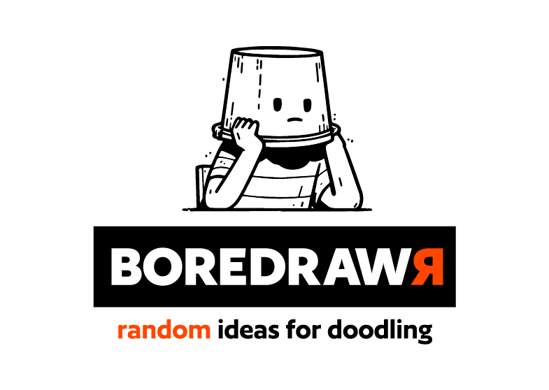

BOREDRAW
From brand identity to a working digital product.
A self-initiated project exploring how a playful brand can help people move from searching for inspiration to making something of their own.
I created the concept, name, visual identity and initial interface, then developed them into a bilingual web app through AI-assisted development.

A starting point for making.
Boredrawr began in 2023 with a familiar creative experience: facing a blank page, searching for references for hours, and still struggling to start.
The concept was to offer a small, unexpected creative cue. Short random prompts and timers would encourage people to draw, doodle or experiment without expecting a polished result.
That intention shaped both the brand and the product: playful, direct and easy to begin.
A name with something inside.
Boredrawr brings together bored, draw and drawer.
Boredom becomes an invitation to draw. The drawer adds a second layer: a place to reach into and pull out something unexpected.
The name gave the project a metaphor that could extend beyond a logo, connecting its identity with the experience of discovering a random prompt.
Giving play a visual language.
I developed the visual identity manually, combining illustrations, color and graphic elements with a distinctive typographic treatment. I chose an existing typeface and explored its letterforms to give the wordmark its own character.
Orange, black and white create a bold foundation. Square forms, heavy outlines and hard-edged offset shadows give the brand a recognizable structure, while the illustrations connect it to drawing and experimentation.
The system needed to work across a project presentation and an interactive interface. Its visual character became a foundation for buttons, panels and other components people would use.
From an early sketch to a simpler digital experience.
My initial interface explored several ways to control randomness, including options for making prompts more complex or unexpected.
As the project evolved, I chose a simpler direction. The current web app centers on a few decisions: choose a creative mode, choose a short timer, and generate a prompt.
Doodling comes first because it reflects the original intention: drawing with fewer expectations. Other modes leave room for people to approach the exercise differently.
Extending the brand through AI and code.
In 2026, I focused on turning the existing concept and identity into a working website.
- 01
Design as the foundation
I used a script I created to generate presentation boards for the project. Those materials then served as a visual reference for Claude to produce the first version of the web app.
- 02
From prototype to published product
I used ChatGPT to help organize the HTML, CSS, JavaScript and prompt data, and connect the project to Firebase Hosting. GitHub and GitHub Desktop supported version control, with automatic deployment keeping the published site in step with updates.
I also developed the site’s SEO and social sharing setup, adapting both for English and Spanish.
- 03
Review, question, refine
My role continued through each stage: defining the direction, reviewing outputs, questioning assumptions and deciding what belonged in the final experience. As a UX designer, I also considered how to test the product with users and use their feedback to guide improvements.
The project gave me room to keep experimenting with code and AI-assisted workflows, using each iteration to refine how the brand, content and interface work together.
Learning from how people play.
Early informal testing revealed something the interface had left unclear: where the activity would happen. One person even tried to draw directly on the screen. That prompted a clearer explanation that users could create on paper or with their preferred tool.
Adding Spanish also required editorial decisions beyond translation. I reviewed tone, terminology and text length to keep the interface concise and preserve the brand’s playful character.
These adjustments helped bring the experience closer to the original intention while making it easier for others to understand.
A living brand and product.
Boredrawr is now a published web app in English and Spanish, with random prompts, short timers and a visual identity carried through the interface.
The project connects the areas I enjoy working across: concept development, naming, visual systems and digital experiences. It also shows how I use AI alongside design judgment and a growing understanding of code to extend a brand into something people can use.